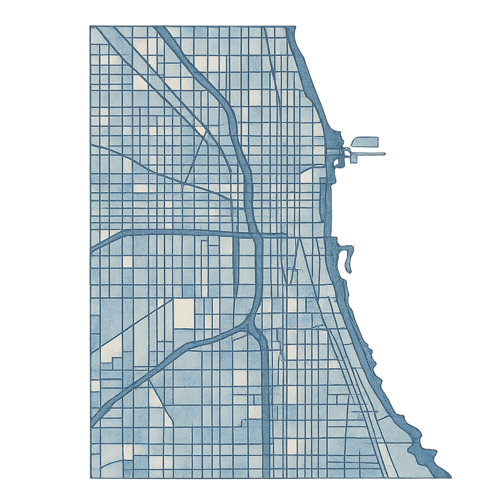

Alfonso Gauna
I am a Economics PhD Student in The Kenneth C. Griffin Department of Economics at The University of Chicago. I earned a BA and MA, both in Economics, from Universidad Torcuato di Tella.
My research interests lie in the intersection of Macroeconomic Theory, Finance, and International Economy. I have been working on topics related to small open economies, the role of expectations in macroeconomics, labor issues, and sovereign debt in Latin American countries.

Córdoba, Argentina

Buenos Aires, Argentina

Chicago, Illinois